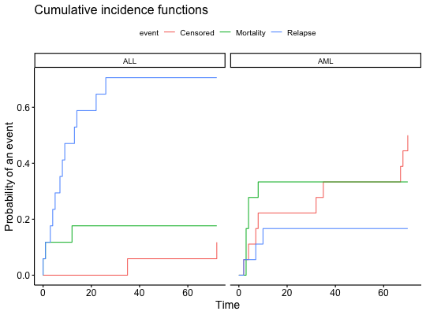

Bone Marrow Transplant
Bone marrow transplant data from L Scrucca et aL., Bone Marrow Transplantation (2007). Data from 35 patients with acute leukaemia who underwent HSCT. Used for competing risk analysis.
data("BMT")
Format
A data frame with 35 rows and 3 columns.
- dis: disease; 0 = ALL; 1 = AML - ftime: follow-up time - status: 0 = censored (survival); 1 = Transplant-related mortality; 2 = relapse
References
Scrucca L, Santucci A, Aversa F. Competing risk analysis using R: an easy guide for clinicians. Bone Marrow Transplant. 2007 Aug;40(4):381-7.
Examples
data(BMT) # Data preparaion #+++++++++++++++++++++ # Label diseases BMT$dis <- factor(BMT$dis, levels = c(0,1), labels = c("ALL", "AML")) # Label status BMT$status <- factor(BMT$status, levels = c(0,1,2), labels = c("Censored","Mortality","Relapse")) # Cumulative Incidence Function # ++++++++++++++++++++++++++ fit <- cmprsk::cuminc( ftime = BMT$ftime, # Failure time variable fstatus = BMT$status, # Codes for different causes of failure group = BMT$dis # Estimates will calculated within groups ) # Visualize # +++++++++++++++++++++++ ggcompetingrisks(fit)